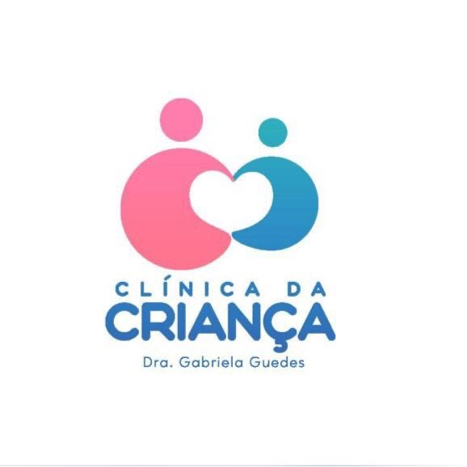
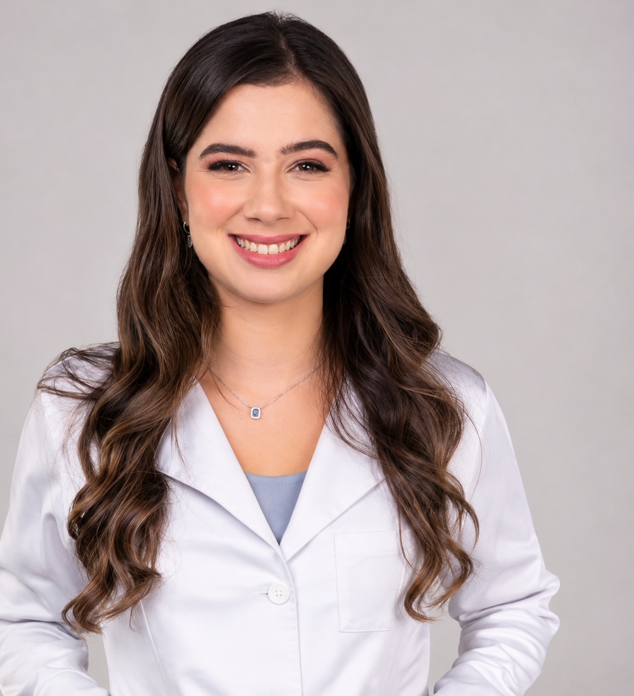

Puericultura
Acompanhamento da saúde, do crescimento e do desenvolvimento infantil.

Dra. Gabriela GuedesPEDIATRIA E ONCOLOGIA PEDIÁTRICAAgendar consultaDa rotina da infância aos cuidados especializados, um olhar atento à saúde da criança e às necessidades de cada família.

Conheça as áreas de atendimento da Dra. Gabriela.
Acompanhamento da saúde, do crescimento e do desenvolvimento infantil.
Avaliação clínica e orientação diante das necessidades de saúde da criança.
Atenção médica especializada à saúde de crianças com doenças oncológicas.
Cuidado pediátrico voltado ao conforto, à qualidade de vida e ao apoio familiar.
Gabriela de Almeida Costa Ramos Guedes é médica pediatra e oncologista pediátrica, com atuação em João Pessoa, na Paraíba.
Seu trabalho abrange a pediatria geral e o cuidado especializado em oncologia pediátrica.
CRM-PB 10717 · RQE 6889 e 6890
Conheça seu perfilA consulta é uma oportunidade de avaliar a saúde da criança e esclarecer dúvidas da família.
Compreensão das necessidades e do histórico de saúde.
Avaliação individual de acordo com cada fase e situação.
Orientações sobre cuidados e acompanhamento conforme avaliação médica.
Consulte a disponibilidade e confirme o local de atendimento antes da visita.
Pediatria geral
Av. Antônio Lira, 1074Oncologia pediátrica
Av. Camilo de Holanda, 552Acompanhe as publicações e conheça mais sobre a atuação profissional.
Informações para facilitar o primeiro contato.
Ver locais de atendimentoConsulte os canais disponíveis na seção de locais de atendimento.
Pediatria geral, puericultura, oncologia pediátrica e cuidados paliativos pediátricos.
Confirme diretamente com o local de atendimento quais convênios e condições estão disponíveis.
Se disponíveis, leve a caderneta de saúde, exames anteriores e informações sobre medicamentos em uso.
Conheça os locais de atendimento e consulte os horários disponíveis.
Agendar consulta